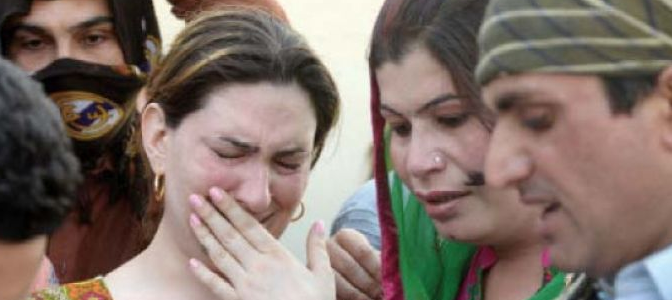

")
Summary:
Be Aware of Deceptions by Islamic Apologists:
Muhammad commanded that:
- Muslims must expel all intersex individuals from their homes and forbid them from entering again.
- However, Muhammad didn't stop there. He also decreed that intersex individuals should be separated from their parents and families and exiled from the city, even if they had committed no crime. He forced them to live in isolation in the desert, cut off from society and contact with others, effectively confining them to solitary lives.
- And when poor intersex people started dying due to starvation, then Muhammad allowed them only to enter the city once or twice, beg for food, and then again return to their isolation in the desert. They were not allowed to take any job and to earn money and lead a happy life.
These commands of Muhammad (Islamic Sharia) were completely illogical and unjust. They prove that there exist no Allah in the heavens and Muhammad was making the commands himself, and giving them the name of 'REVELATION', while only humans can commit such unjust mistakes.
However, Islamic apologists attempt to mislead by claiming that Muhammad didn't exile Intersex individuals, but he only exiled EFFEMINATE men (i.e., men who deliberately adopt feminine behaviors), thus confusing the issue.
First and foremost, we encourage our readers to understand the differences between the following terms:
- Intersex/Hermaphrodite (Arabic: مخنث): Intersex individuals are born with physical characteristics that do not fit typical male or female categories. Historically, they were referred to as "hermaphrodites," but this term is now outdated and considered offensive.
- Eunuch: A man who has been castrated, often for social or cultural reasons.
- Effeminate: An effeminate man displays behaviors, appearances, or mannerisms traditionally associated with women.
In Islamic hadiths, Muhammad indeed ordered the expulsion and exile of innocent Intersex/Hermaphrodite (Arabic: مخنث) individuals.
Please note that effeminate men are often assumed to be homosexual, and Muhammad ordered the killing of homosexuals. It is highly unlikely that Muhammad would have allowed effeminate men to freely enter and interact with his wives in their homes, especially after the revelation of the verse of Hijab, which occurred years before the siege of Ta'if.
(1) Muhammad Ordered Muslims to Expel All Intersex Individuals from Their Homes
Background Story:
Muslims were preparing to attack the city of Taif the following day, where they hoped to get hands to captive women (whom Muslim Jihadists used to rape after turning them into slaves)
An Intersex person, named Hit, visited Um Salama (the wife of Muhammad, who was present with him during that war) and instructed her brother to try to acquire a specific woman among the opponents as a slave after their victory. He described her beauty, noting that she had "four folds" in her stomach, which was considered a sign of beauty at the time.
Muhammad overheard this conversation and subsequently ordered Muslims to expel ALL intersex individuals from their homes, regardless of whether they had committed any wrongdoing.
Sahih al-Bukhari, 4324 (Translated by Mohsin Khan):
حَدَّثَنَا الْحُمَيْدِيُّ، سَمِعَ سُفْيَانَ، حَدَّثَنَا هِشَامٌ، عَنْ أَبِيهِ، عَنْ زَيْنَبَ ابْنَةِ أَبِي سَلَمَةَ، عَنْ أُمِّهَا أُمِّ سَلَمَةَ ـ رضى الله عنها ـ دَخَلَ عَلَىَّ النَّبِيُّ صلى الله عليه وسلم وَعِنْدِي مُخَنَّثٌ فَسَمِعْتُهُ يَقُولُ لِعَبْدِ اللَّهِ بْنِ أَبِي أُمَيَّةَ يَا عَبْدَ اللَّهِ أَرَأَيْتَ إِنْ فَتَحَ اللَّهُ عَلَيْكُمُ الطَّائِفَ غَدًا فَعَلَيْكَ بِابْنَةِ غَيْلاَنَ، فَإِنَّهَا تُقْبِلُ بِأَرْبَعٍ وَتُدْبِرُ بِثَمَانٍ. وَقَالَ النَّبِيُّ صلى الله عليه وسلم " لاَ يَدْخُلَنَّ هَؤُلاَءِ عَلَيْكُنَّ ". قَالَ ابْنُ عُيَيْنَةَ وَقَالَ ابْنُ جُرَيْجٍ الْمُخَنَّثُ هِيتٌ. حَدَّثَنَا مَحْمُودٌ حَدَّثَنَا أَبُو أُسَامَةَ عَنْ هِشَامٍ بِهَذَا، وَزَادَ وَهْوَ مُحَاصِرٌ الطَّائِفَ يَوْمَئِذٍ.
Narrated Um Salama: The Prophet (ﷺ) came to me while there was an effeminate man (Arabic: مُخَنَّثٌ) sitting with me, and I heard him (i.e. the effeminate man) saying to `Abdullah bin Abi Umaiya, "O `Abdullah! See if Allah should make you conquer Ta'if tomorrow, then take the daughter of Ghailan (in marriage) [Our Comment: It is not about marriage, but about raping her as slave, and the English translator showed another dishonesty by calling it a MARRIAGE] as (she is so beautiful and fat that) she shows four folds of flesh when facing you, and eight when she turns her back." The Prophet (ﷺ) then said, "These (effeminate men) should never enter upon you (O women!)." Ibn Juraij said, "That effeminate man was called Hit." Narrated Hisham (the sub-narrator): The above narration and added extra, that at that time, the Prophet, was besieging Taif.
As previously mentioned, this translation is misleading and dishonest. The Arabic word مُخَنَّثٌ in this hadith does not refer to an effeminate man but rather to an intersex (hermaphrodite) individual. The reasons are as follows:
- It is highly improbable that Muhammad would have permitted effeminate men to freely enter and interact with his wives in their homes, especially after the verse of Hijab was revealed. This verse (Quran 33:59) was revealed in the 5th year of Hijri, while the Siege of Ta'if mentioned in this narration occurred in the 8th year of Hijri.
- Effeminate men are typically either attracted to other men (homosexuals) or attracted to women. They are not castrated and do not exhibit EUNUCH-like behavior.
- In the case of homosexuals, Muhammad did not order exile but prescribed the death penalty.
So why would Muhammad (and his Allah) not have known this and still allowed these effeminate MEN to enter his home and interact with his wives for years, despite potential attraction toward women?
The simple answer is that they were not effeminate men, but intersex individuals whom Muhammad had allowed to interact with his wives.
Luckily, we have still one English Translator, Aisha Bewley, who translated it correctly:
Sahih Bukhari, 4069 (Translated by Aisha Bewley):
4069. It is related from Umm Salama, "The Prophet , may Allah bless him and grant him peace, visited me when there was a hermaphropdite with me and heard him say to 'Abdullah ibn Umayya, 'O 'Abdullah! If you think that Allah will let you conquer tomorrow, then you must have the daughter of Ghaylan. She has four folds facing you and eight with her back to you.' The Prophet, may Allah bless him and grant him peace, said, 'Do not let those people visit you (women).'" Ibn Jurayj said, "The hermaphropdite was called Hit." This is related from Hisham who added, "He was besieging Ta'if on that day."
(2) Muhammad further ordered to separate them from their families, and then Exile them ALL from the city
Muhammad didn't stop asking Muslims to expel poor intersex individuals from their homes. But he went further and he asked Muslims to:
- Separate intersex individuals from their parents and families.
- And then exile them from the city to the desserts.
Thus, poor intersex people were forced to live in isolation, akin to solitary confinement, regardless of their innocence or whether they had committed any crime.
Sunan Abi Dawud, 4107and 4109:
Narrated Aisha, Ummul Mu'minin: A mukhannath (eunuch) used to enter upon the wives of Prophet (ﷺ). They (the people) counted him among those who were free of physical needs. One day the Prophet (ﷺ) entered upon us when he was with one of his wives, and was describing the qualities of a woman, saying: When she comes forward, she comes forward with four (folds in her stomach), and when she goes backward, she goes backward with eight (folds in her stomach). The Prophet (ﷺ) said: Do I not see that this (man) knows what here lies. Then they (the wives) observed veil from him.
... He (the Prophet) exiled him and he lived in a desert (outside Medina).
Grade: SAHIH (Albani)
Note: There is again distorting of the word مُخَنَّثٌ by the Muslim English Translator of Sunnan Abu Dawud, where he translated it to "Eunuch", which is a dishonest translation and a distortion تحریف.
(3) Their Only Option to Survive Was to Beg for Food
Muhammad prohibited intersex indviduals to take any job and to earn their living, but to live in exile in poverty. People told Muhammad, in that case, they would die due to starvation. Upon that, Muhammad allowed them to enter the city twice, and beg for food.
.. (when Muhammad exiled that intersex person in the above mentioned narration, then he was told) Messenger of Allah, in that case he will die of starvation. So he allowed him to visit (the city) twice a week so that he might ask for food and go back.
Grade: SAHIH (Albani)
It is noteworthy that Muhammad’s treatment of intersex individuals was harsher than that of beggars. While a typical beggar was allowed to beg daily and remain within the city (with his family and friends), an exiled intersex person was permitted to beg only twice a week and had to leave the city after each visit.
Excuse by Muslim Preachers: It Was a Crime to Describe the Beauty of a Woman
Muslim Preachers blame that the Intersex person (i.e. Hit) was committing a CRIME by describing the beauty of that woman to another man, for which he was punished.
Firstly:
How can describing the beauty of a woman be considered a crime when Islamic Sharia itself mandates that slave and prisoner women be paraded in public with exposed breasts and stomachs? These women were also sold in semi-naked states at slave markets, where Muslim customers were allowed to touch their private parts.
On one hand, Muslim preachers declare it a crime for the intersex person Hit to describe a woman’s beauty, resulting in his punishment of exile and begging. On the other hand, Islam sanctioned the public exposure of prisoner/slave women’s bodies. How can these preachers reconcile this double standard? Why can’t they acknowledge the suffering of poor intersex individuals and injustice against them? Yet, Muslim Preachers call Muhammad “a Mercy to all Worlds, Mankind, Jinns & Animals”.
Secondly:
Even if we accept that Hit committed a crime by describing the beauty of the woman, why were all other intersex individuals punished? They committed no wrongdoing.
- Why was it not sufficient for Muslims to simply expel them from their homes and not allow to enter their homes (like other men)?
- After being expelled, intersex individuals would no longer have the opportunity to describe the beauty of any woman. So why was exile from the city necessary, which caused them extreme pain of separation from their families and hardships of living in deserts?
Additionally, if describing the beauty of women is forbidden only for effeminate individuals, does this not create a double standard? Are women or male slaves subjected to the same scrutiny? According to Islamic Sharia, male slaves are considered “Mahram” and do not require Hijab from their masters' wives and daughters.
So what if male slaves describe the beauty of any woman? Are you then going to expel and exile all slaves too? Or are you going to show Double Standards again, and keep the slaves in your homes, although male slaves have more LUST for women than effeminate ?
How Muslim Preachers cannot see such huge and clear CONTRADICTIONS in the system of Islam?
Thirdly:
Instead of immediately imposing the harsh punishment of exile and solitary confinement, wouldn't it have been more appropriate for Muhammad to first teach him the etiquette and rules, making it clear that describing a woman's beauty is forbidden?
Fourthly:
Due to the peculiar teachings of Muhammad and Islamic Sharia, Muslims have developed a deep-seated animosity toward intersex individuals, similar to the widespread disdain for dogs today.
For the past 1,400 years, intersex individuals have endured significant suffering. Tragically, even their own Muslim families often turned against them. It is incredibly painful when one's own family harbors hatred for reasons beyond one's control.
Fifthly:
We are grateful to the secular Western system for recognizing intersex individuals as human beings deserving of full respect and rights for the first time in history. The entire world owes a debt of gratitude to the Western system for its groundbreaking efforts in granting rights to slaves, women, intersex individuals, minorities, and even animals.
This secular Western system has demonstrated a form of morality that is often criticized and rejected by followers of Islam, who label it as “immoral.”
We take pride in our secular values and the moral principles they uphold.
While Muslims assert that Allah holds a monopoly on morality, the actions and teachings of Allah and Muhammad, as seen in these instances, reveal a different picture.
(4) Killing an intersex individual only for resembling women
عَنْ أَبِي هُرَيْرَةَ، أَنَّ النَّبِيَّ صلى الله عليه وسلم أُتِيَ بِمُخَنَّثٍ قَدْ خَضَبَ يَدَيْهِ وَرِجْلَيْهِ بِالْحِنَّاءِ فَقَالَ النَّبِيُّ صلى الله عليه وسلم " مَا بَالُ هَذَا " . فَقِيلَ يَا رَسُولَ اللَّهِ يَتَشَبَّهُ بِالنِّسَاءِ . فَأُمِرَ بِهِ فَنُفِيَ إِلَى النَّقِيعِ فَقَالُوا يَا رَسُولَ اللَّهِ أَلاَ نَقْتُلُهُ فَقَالَ " إِنِّي نُهِيتُ عَنْ قَتْلِ الْمُصَلِّينَ " .
An effeminate man [Wrong Translation: The word is مخنث, which means intersex individual] who had dyed his hands and feet with henna was brought to the Prophet (ﷺ). He asked: What is the matter with this man? He was told: "Messenger of Allah! He imitates the look of women." So he issued an order regarding him and he was banished to an-Naqi'. The people said: Messenger of Allah! Should we not kill him? He said: I have been prohibited from killing people who pray. AbuUsamah said: Naqi' is a region near Medina and not a Baqi'.
Grade: SAHIH (Al-Albani)
According to human nature, intersex individuals can naturally experience feelings of love. It is entirely normal for an intersex person to feel attraction toward men and to identify internally as a woman (or vice versa).
However, Muhammad and Allah considered this to be the greatest crime.
If an intersex man (or any gay individual) engages in a romantic relationship with another man, marries, and has a sexual relationship, it is deemed the gravest of sins by Muhammad and Allah.
In fact, even merely identifying as a woman internally (without any sexual interaction) and adopting feminine practices, such as using henna, is seen as a severe crime deserving of death according to Muhammad and Allah.
The only factor that spared such an intersex person from execution was their practice of Salah (5 times Islamic prayer). Without it, Muhammad would have ordered their death. In simple words, this means that if a non-Muslim intersex individual had used henna, then Muhammad would have defenitely commanded to kill that individual.
Humanity is the greatest لا أكبر إلا الإنسانية
